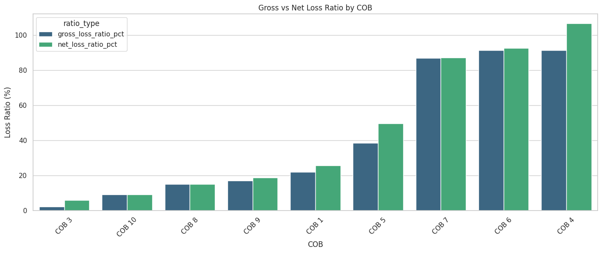
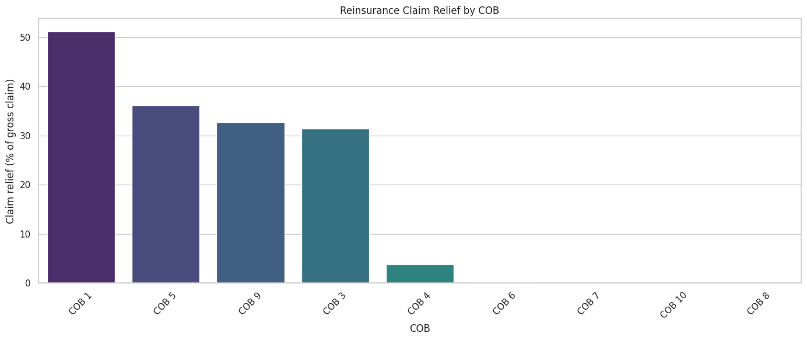
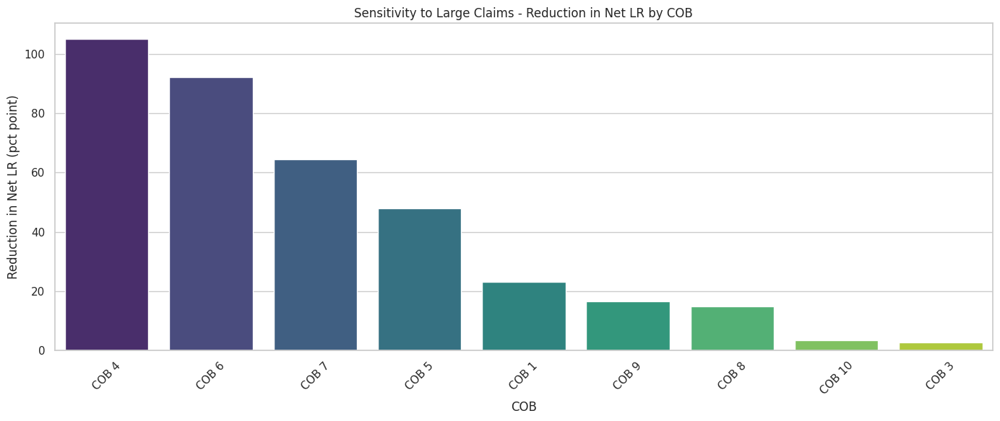
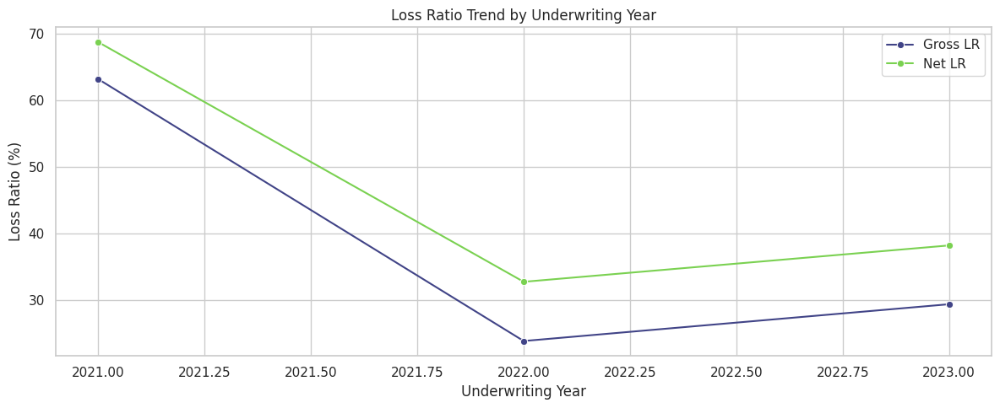
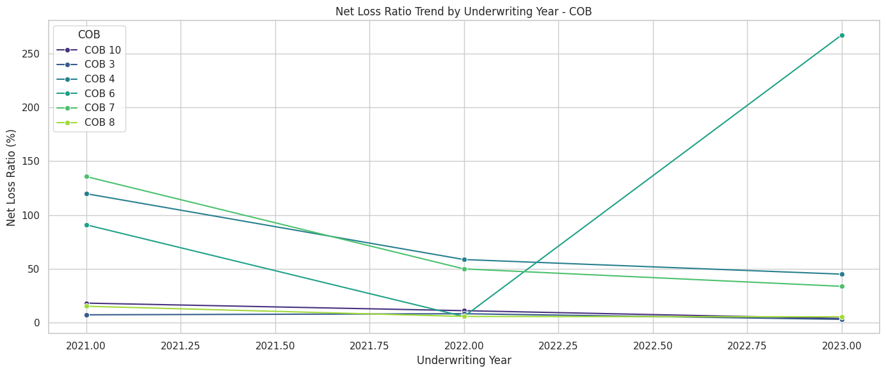

Step 5 — Segmen Paling Menguntungkan dan Paling Merugikan
Analisis Loss Ratio menunjukkan portofolio masih profitable secara total, tetapi kerugian terkonsentrasi pada beberapa segmen tertentu.
Loss Ratio & Profitability
Net Loss Ratio portofolio berada di 58,54% dengan Net Underwriting Result IDR 358,7B, namun terdapat segmen yang sudah loss-making, terutama COB 4, BRANCH K, CHANNEL B, dan PRODUCT0221.
Net Premium
IDR 1.964T
Basis premi setelah dikurangi premi reasuransi.
Net Claim
IDR 1.150T
Beban klaim setelah dikurangi recovery reasuransi.
Gross / Net LR
49.34% / 58.54%
Net LR lebih tinggi karena net premium lebih kecil setelah cession.
Net UW Result
IDR 358.7B
Portofolio total masih profitable secara nominal.
Temuan Utama
- Segmen paling menguntungkan: `COB 3` dengan Net LR 6,03%; `CHANNEL D` menjadi channel terkuat secara skala dengan Net LR 17,60% dan Net underwriting result IDR 411,4B.
- Segmen paling merugikan: `COB 4` mencatat Net LR 106,55%, `BRANCH K` 103,87%, `CHANNEL B` 116,16%, dan `PRODUCT0221` 120,59%.
- Interpretasi reasuransi: reasuransi membantu menurunkan beban klaim secara nominal, tetapi tidak selalu menurunkan Net LR karena denominator net premium ikut mengecil.
- Implikasi bisnis: perhatian utama perlu difokuskan pada segmen yang sudah loss-making karena segmen tersebut menjadi sumber kerugian terbesar portofolio.
Plot Pendukung

Gross vs Net Loss Ratio per COB untuk membandingkan profitabilitas sebelum dan sesudah efek reasuransi.

Claim relief memperlihatkan seberapa besar bantuan reasuransi dalam menurunkan gross claim tiap COB.
Sumber: `step5_loss_ratio_profitability_analysis_result.ipynb` | Formula: Gross LR = Gross Incurred Claim / GWP, Net LR = Net Incurred Claim / Net Premium
Step 5 — Large Claim Menjadi Driver Utama Downside Portofolio
Sensitivity analysis memperlihatkan bahwa sebagian kecil large claim menjelaskan porsi terbesar penurunan profitabilitas portofolio.
Sensitivity & Trend
Portofolio
58.54% → 5.07%
Net Loss Ratio turun drastis pada sensitivity analysis saat dampak large claim dikeluarkan.
Segmen Paling Sensitif
COB 4
Net LR membaik dari 106,55% menjadi 1,43%, menandakan downside sangat terkonsentrasi pada shock claim besar.
Interpretasi dan Implikasi
- Large claim adalah driver utama downside. Selain `COB 4`, segmen yang sangat sensitif adalah `COB 6` dan `COB 7`.
- Tren underwriting year: cohort 2021 adalah yang paling lemah dengan Net LR 68,77%, membaik di 2022 ke 32,78%, lalu naik lagi di 2023 menjadi 38,24%.
- Rekomendasi utama: perketat underwriting terms dan pricing untuk `COB 4`, `CHANNEL B`, dan `PRODUCT0221`.
- Rekomendasi lanjutan: review claim management, reserving, serta struktur reasuransi untuk segmen dengan claim relief rendah tetapi downside volatility tinggi.
Plot Pendukung

Penurunan Net LR per COB jika dampak large claim dikeluarkan pada sensitivity analysis.

Tren Loss Ratio per underwriting year untuk melihat cohort mana yang paling lemah.

Tren Net Loss Ratio per underwriting year dan COB untuk mengidentifikasi segmen mana yang konsisten melemah atau membaik.
Catatan: analisis large claim adalah sensitivity analysis, bukan proyeksi realistis kondisi aktual tanpa large claim.